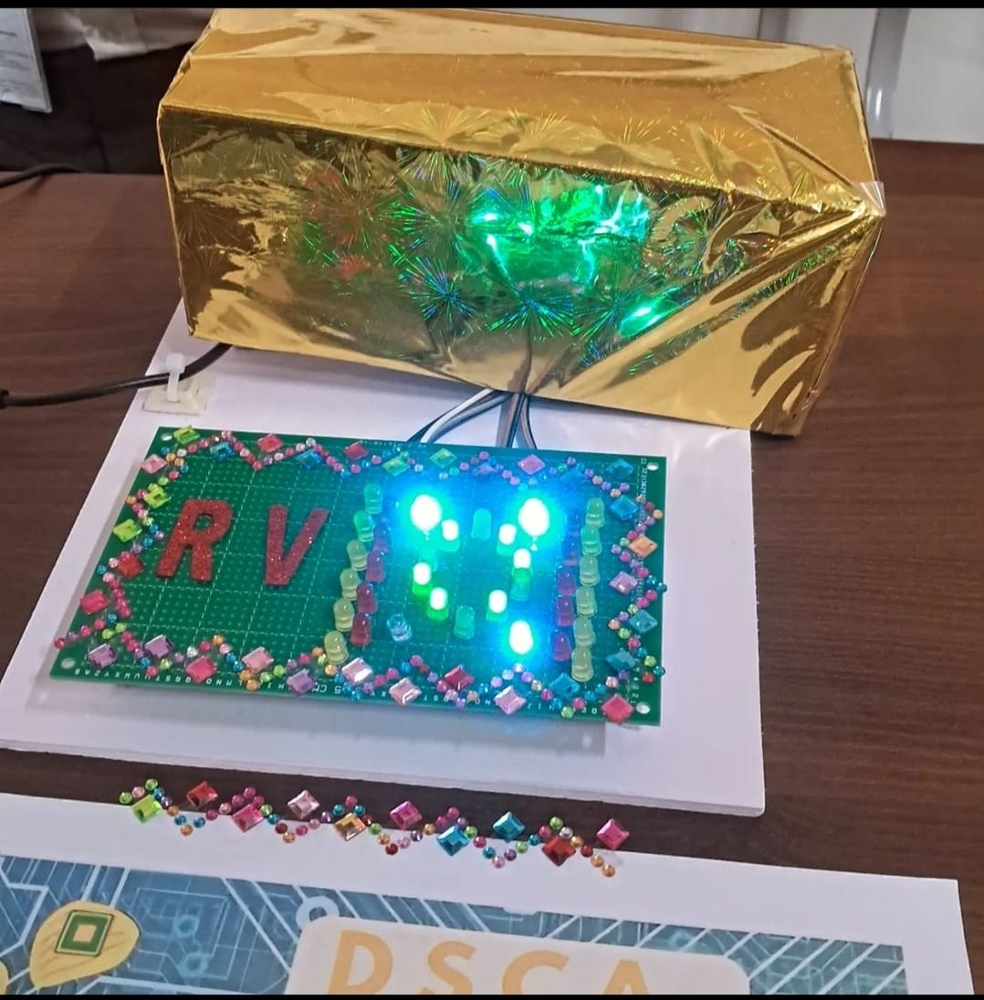

My Projects
DSCA Chips
Driven by a fascination for electronics, my project portfolio showcases a commitment to innovation and practical problem-solving. With a passion for circuit design, prototyping, and system integration, I've spearheaded projects that harness cutting-edge technology to create robust and efficient electronic solutions. My expertise lies in leveraging creativity and technical proficiency to engineer functional and impactful electronic system
We created a project using 555 IC's. Our project was based on Cascading lights. We implemented 4 different types of concepts which were fading, flashing, alternating and zooming of lights.
Community Service
Dedicated to making a positive impact, I am deeply committed to community service. Believing in the transformative power of collective action, I actively engage in initiatives that address societal needs. Whether volunteering at local shelters, participating in environmental clean-ups, or mentoring peers, my passion lies in contributing to the well-being of others. Through community service, I find fulfillment in fostering connections and creating a ripple effect of positive change, driven by the belief that small actions can lead to significant improvements in the community.
My team mates and me went to Shree Swaminarayan Gurukul International School,Bangalore and taught the class IV students about the importance of marine life and how to prevent pollution of water bodies and preserve it for the future generations.
Fitness Website
Fueled by a fervor for creativity and functionality, my passion for web design extends beyond mere aesthetics. Striving to craft immersive and user-friendly digital experiences, I constantly explore innovative design trends and cutting-edge technologies. From conceptualizing layouts to coding responsive interfaces, I thrive on the dynamic challenge of translating ideas into visually compelling and seamlessly navigable websites. Web design, for me, is a captivating blend of artistry and problem-solving, where each project presents an opportunity to engage and captivate online audiences.
I created a Fitness Website as a part of my currciulum. Although I had knowledge only to do the front end part of the website, it gave me exposure on how to build websites. My project was a fully functional website which I code in VS code using HTML, CSS, JavaScript. The fitness website explained all the courses we offered and also marketing our flagship trainers. It even contained a functional BMI calculator.